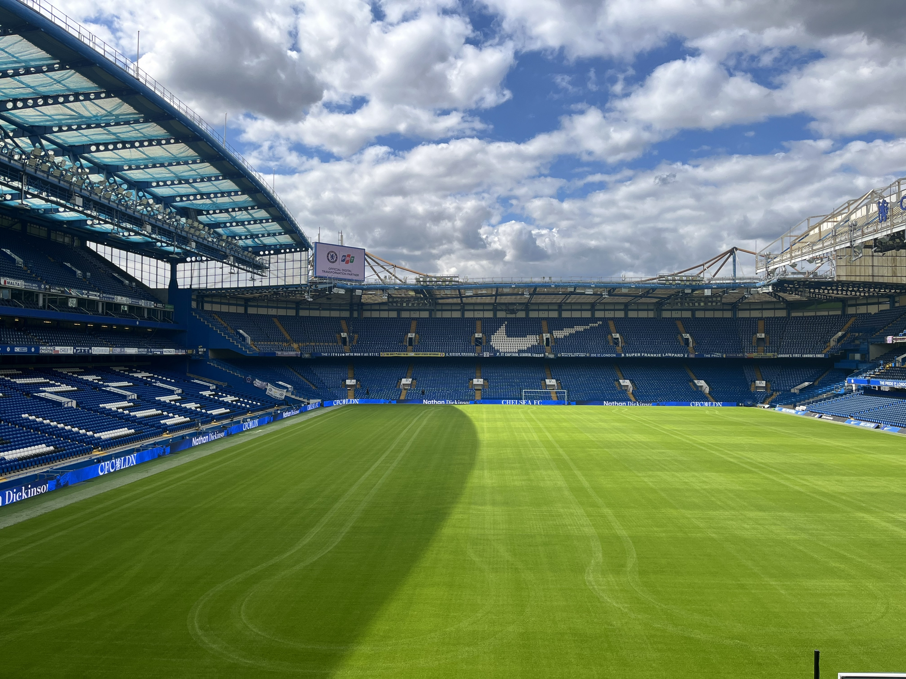
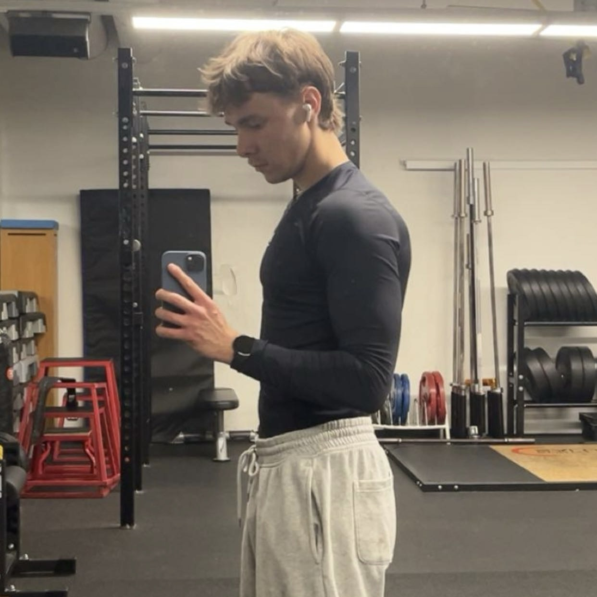
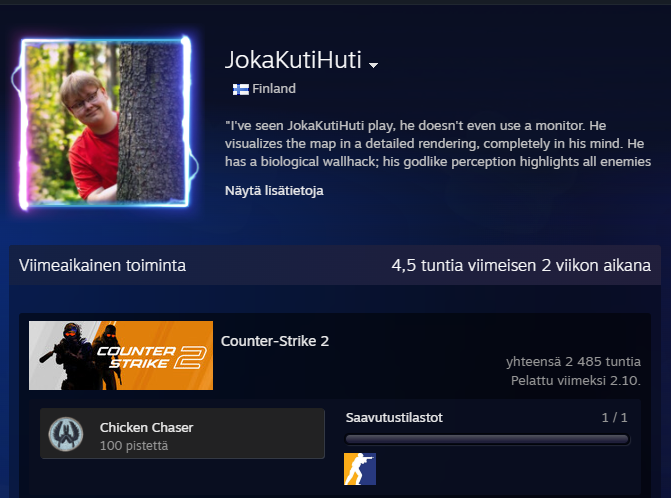

Jalkapallo
Harrastin 11-vuotta jalkapalloa ja se oli suuri intohimoni nuoruudessani. Nykyään en pelaa enää aktiivisesti missään joukkueessa, mutta rentoa potkimista ja pelailua tulee silti tehtyä kaveriporukalla. Seuraan myös paljon jalkapalloa ja lempijoukkueeni ovat Chelsea ja tietysti kasvattiseurani Jäps! Kuvassa Chelsean kotistadion, jossa pääsin käymään 2025 kesällä.

Sali ja juokseminen
Jalkapallon lopettamisen jälkeen innostuin kuntosaliharjoittelusta kavereideni ansiosta. Aluksi treenaaminen oli melko satunnaista, enkä asettanut itselleni juurikaan tavoitteita. Nykyään olen kuitenkin innostunut treenaamaan tavoitteellisesti ja treenaaminen on helpottanut henkisesti nollamaan ajatukset arjen kiireissä. Kuntosalin lisäksi olen innostunut juoksemaan, mutta olen siinä vielä melko aloittelijan tasolla. Tavoitteena olisi kuitenkin suorittaa maratonin vielä jonain päivänä!

Videopelaaminen
Urheilun lisäksi tykkään käyttää vapaa-aikaani myös videopelien parissa. Kiinnostus videopeleihin on lähtenyt jo hyvin nuoresta iästä ja vuosien varrella pelitunteja on kertynytkin kunnioitettava määrä. Tällä hetkellä suosikkipelejäni ovat ainakin Counter Strike, Overwatch ja Rocket League. Lisäksi kaikki kaveripohjaiset pelit ovat mukavaa viihdettä. Nykyään pelaamiseen ei enää kulu yhtä paljon aikaa kuin nuorempana, mutta se on silti minulle tärkeä harrastus ja mielenkiinnonkohde.